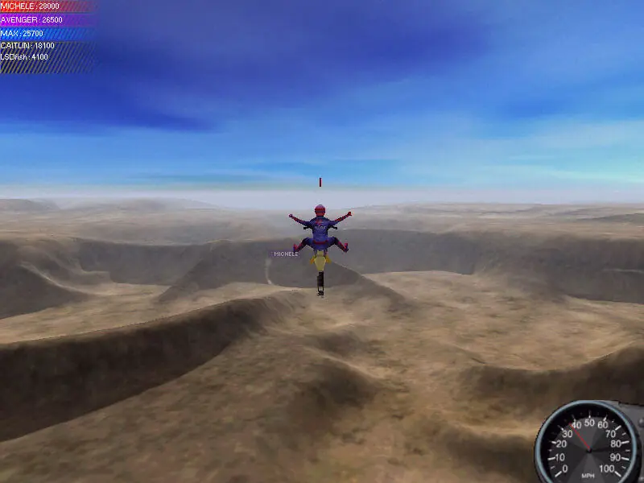
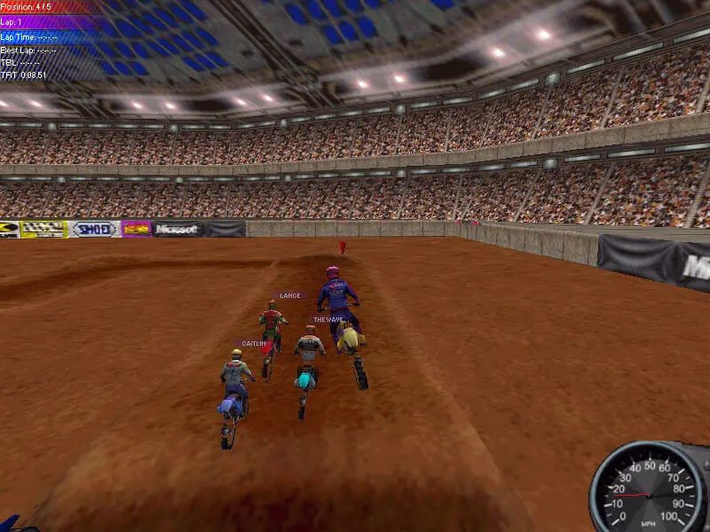
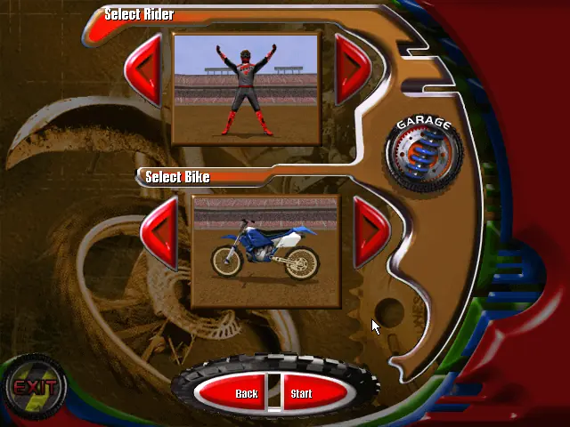
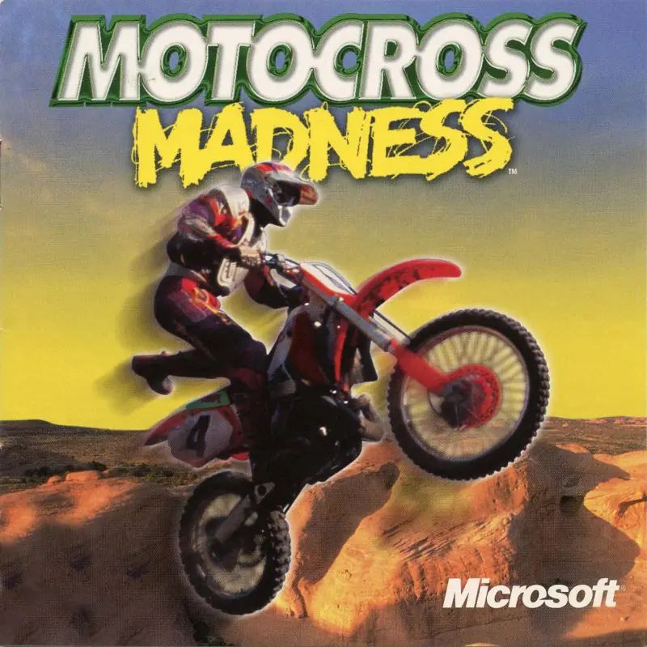

Motocross Madness




Details
My notes
I remember a dirt-bike game.
It was Motocross Madness.
Identification status
Confirmed by me: Motocross Madness is the dirt-bike game I remember. These pictures show the original 1998 PC game.
About the original game
Motocross Madness was developed by Rainbow Studios and published by Microsoft in 1998 for Windows. It combines dirt-bike races with jumping and stunt riding, using a view from behind the rider. Environments include outdoor dirt terrain and stadium tracks.
The Digit connection
The JNAFAU library’s CD catalogue lists a December 2005 Digit CD with “Games Motocross Madness” at entry 103, on PDF page 17. That confirms a magazine-disc connection for the title, but does not establish which edition or disc I personally played.
Pictures to compare
- The rider and bike seen from behind.
- The shape of the hills and the stadium track.
- The on-screen speedometer and race information.
- The cover and menu design, if those look familiar.